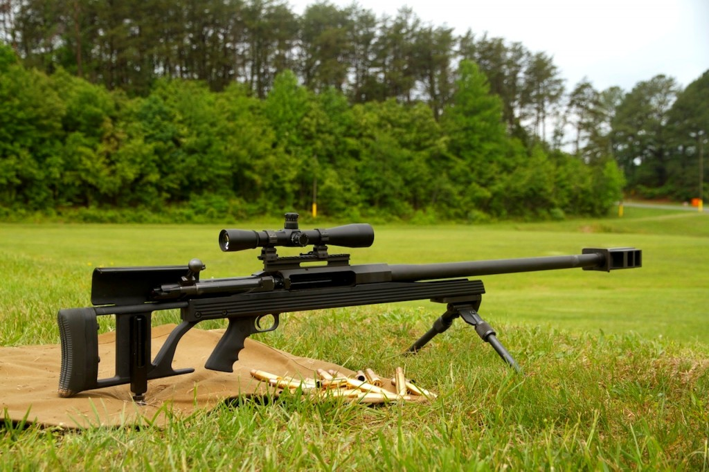

AR-50 — однозарядная крупнокалиберная снайперская винтовка производства Armalite.
Винтовка обладает тяжёлым стволом с дульным многоканальным компенсатором. Стрельба ведётся
с регулируемых по высоте сошек. Пистолетная рукоятка и облегчённый тактический съёмный приклад —
модифицированные от автомата М16. Винтовка транспортируется в специальных мягких или жёстких кейсах.
AR-50 комплектуется оптическим прицелом, открытый прицел отсутствует. Рассеивание при стрельбе на 1000
ярдов (914,4 м) — 7-8 дюймов (17,78—20,32 сантиметров).
- Масса, кг 15,5
- Длина, мм 1511
- Длина ствола, мм 787
- Патрон 12,7×99 мм (.50 BMG)
- Калибр, мм 12,7
- Принципы работы одназарядная, продольно-скользящий поворотный затвор
- Максимальная
дальность, м 1800 (эффективная)
- Вид боепитания по одному патрону через окно в ствольной коробке
- Прицел имеется планка Пикатинни для крепления различных оптических прицелов